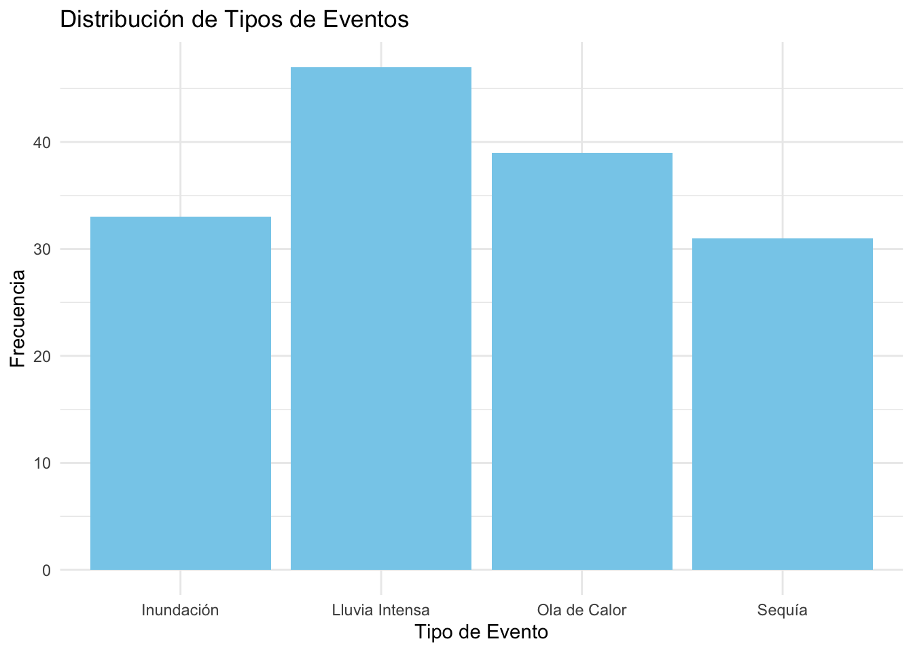
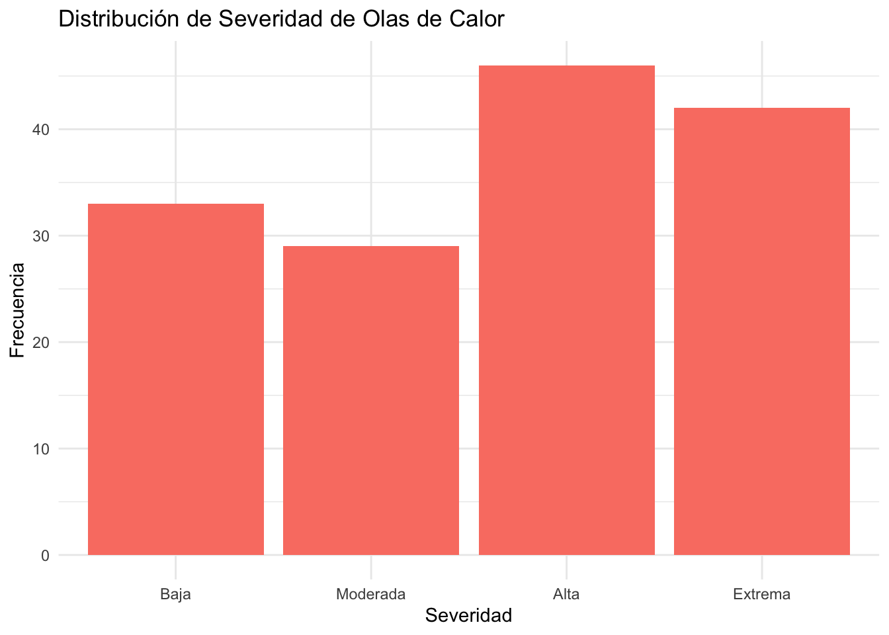
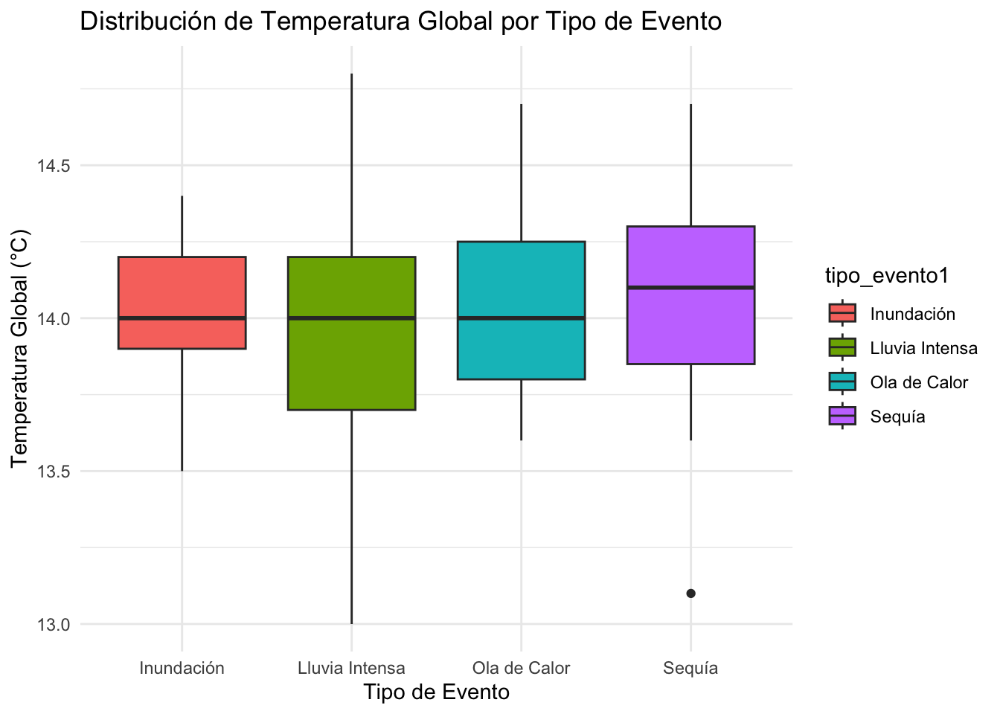
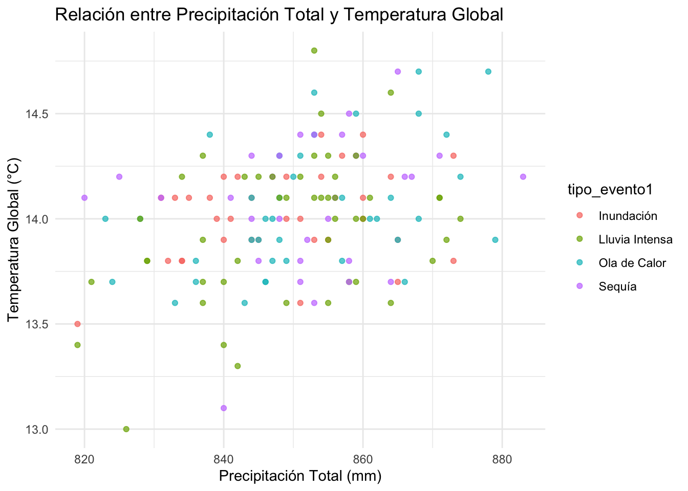
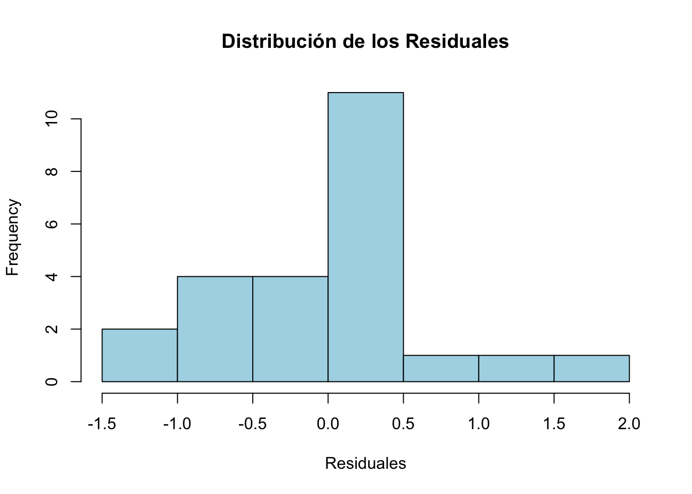
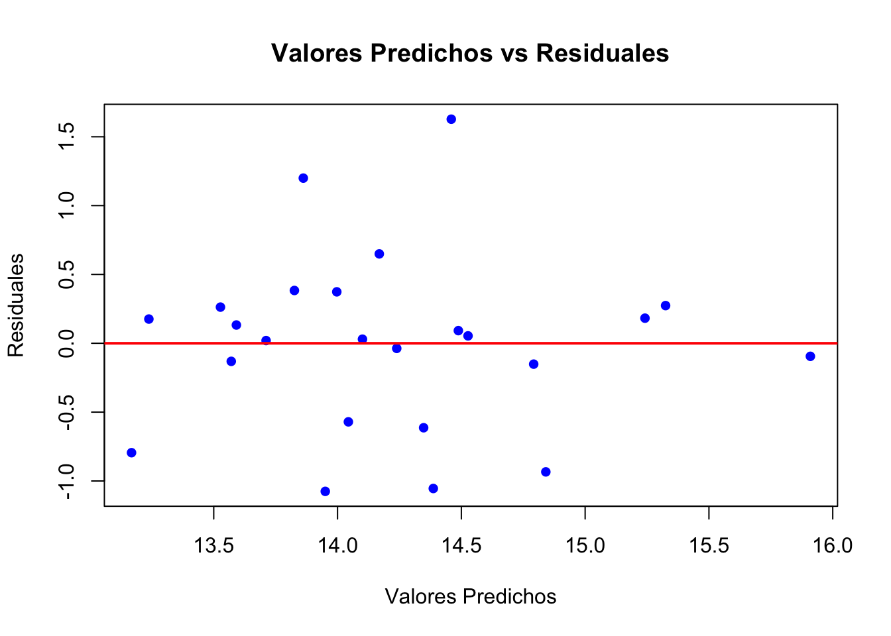

# Definimos el rango de estudio
años <- 2000:2023
n_años <- length(años)
#Variables Cuantitativas (Simulación de datos con unidades de media especificadas)
set.seed(123) #fijamos semilla
#Temperatura Media Global Anual (ºC)
temp_global <- 14 + 0.02*(años - 2000) +rnorm(n_años,mean=0, sd=1)
# Número de Días de Olas de Calor (días)
dias_calor <- round(5 + 1.5 * (temp_global - 14) + rnorm(n_años, mean = 0, sd = 2))
# Número de Días de Lluvias Intensas (días)
dias_lluvia <- round(10 + 1.2 * (temp_global - 14) + rnorm(n_años, mean = 0, sd = 2))
# Precipitación Anual Total en milímetros (mm)
precipitacion_total <- round(800 + rnorm(n_años, mean = 0, sd = 100))
# Variables Ordinales
# Severidad de las Olas de Calor (ordinal)
ola_calor <- cut(dias_calor,
breaks = c(-Inf, 5, 10, 15, Inf),
labels = c("Baja", "Moderada", "Alta", "Extrema"),
ordered_result = TRUE)
# Intensidad de Lluvias Intensas (ordinal)
lluvia_intensa <- cut(dias_lluvia,
breaks = c(-Inf, 10, 20, Inf),
labels = c("Baja", "Moderada", "Alta"),
ordered_result = TRUE)
# Período de Tiempo (ordinal por década)
periodo_de_tiempo <- cut(años,
breaks = c(1999, 2010, 2020, 2023),
labels = c("2000-2010", "2010-2020", "2020-2023"),
ordered_result = TRUE)
# Variables Nominales
# Región Geográfica (nominal)
regions <- c("América del Norte", "Europa", "Asia", "América Latina", "África")
regions <- sample(regions, n_años, replace = TRUE)
# Tipo de Evento Extremo (nominal)
tipo_evento <- c("Ola de Calor", "Lluvia Intensa", "Sequía", "Inundación")
tipo_evento <- sample(tipo_evento, n_años, replace = TRUE)
# Crear Data Frame con todas las variables
data <- data.frame(
años = años,
temp_global = temp_global, # Temperatura Media Global Anual (°C)
dias_calor = dias_calor, # Número de Días de Olas de Calor (días)
dias_lluvia = dias_lluvia, # Número de Días de Lluvias Intensas (días)
precipitacion_total = precipitacion_total, # Precipitación Anual Total (mm)
ola_calor = ola_calor, # Severidad de las Olas de Calor (ordinal)
lluvia_intensa = lluvia_intensa, # Intensidad de Lluvias Intensas (ordinal)
periodo_de_tiempo = periodo_de_tiempo, # Período de Tiempo (ordinal)
regions = factor(regions), # Región Geográfica (nominal)
tipo_evento = factor(tipo_evento) # Tipo de Evento Extremo (nominal)
)
# Visualizar las primeras filas del Data Frame para verificar las variables
#head(data)
# Resumen de las variables para confirmar el tipo de datos y sus valores
#summary(data)Taller evaluado de repaso para el Primer Parcial - Àngela Martí Calatayud
20582- Análisis de Datos para el GMAT
Elige un tema que te interese (finanzas, medio ambiente, educación, cine, entre otros). En este taller, aplicarás los pasos del método científico (ver sección 1.1 de los apuntes de la asignatura) para abordar, con datos simulados, una problemática relacionada con el tema elegido. Deberás presentar un informe de tu proyecto siguiendo la estructura detallada en el documento “Recomendaciones para escribir informes de proyectos en Estadística,” que se encuentra en la sección “Práctica” de la página del curso en Aula Digital.
Primer paso:
Define los objetivos de tu trabajo: Describe la hipótesis general que deseas investigar y especifica los objetivos específicos necesarios para validar o refutar dicha hipótesis.
Respuesta:
El cambio climático está provocando un aumento en la temperatura media global, lo que a su vez incrementa la frecuencia y severidad de fenómenos meteorológicos extremos, como olas de calor y lluvias intensas, como hemos visto esta última semana en Valencia.
En primer lugar, vamos a analizar la tendéncia de la temperatura media global, és decir, vamos a: - Examinar la evolución de la temperatura global a lo largo del periodo simulado (por ejemplo, de 2000 a 2023). - Confirmar si hay un incremento significativo en la temperatura media anual, lo cual es fundamental para explorar su posible relación con los fenómenos extremos. Para ello, haremos un análisis de series temporales y regresión lineal para identificar una tendencia significativa en los datos de temperatura global.
Seguidamente, estudiaremos la frecuencia de fenómenos meteorológicos extremos a lo largo del tiempo: - Cuantificaremos el número de días con temperaturas extremas (olas de calor) y de eventos de lluvias intensas en cada año del periodo simulado. -Observaremos si hay un patrón creciente en la ocurrencia de estos fenómenos en las últimas décadas. Haremos gráficos de frecuencia anual y regresión para observar tendencias en la cantidad de fenómenos extremos.
Después, examinamos la relación entre el aumento de la temperatura global y la frecuencia de fenómenos extremos, para ello: - Se analizar si los años con mayores temperaturas medias globales coinciden con una mayor frecuencia de fenómenos extremos. - Se evaluar la relación entre los incrementos en la temperatura global y la ocurrencia de olas de calor y lluvias intensas. La técnica, serà un análisis de correlación entre la temperatura media anual y la frecuencia de fenómenos extremos.
Seguidamente, cuantificaremos la magnitud del impacto del cambio climático en la frecuencia de fenómenos extremos, donde se: - Calcula el grado en el que el aumento de la temperatura media global está asociado con el incremento de fenómenos extremos. - Proporcionar una estimación de cuántos eventos extremos adicionales se podrían atribuir al aumento de cada grado en la temperatura global. Técnica sugerida: Modelos de regresión lineal o Poisson para cuantificar el impacto directo del cambio de temperatura en la frecuencia de fenómenos. Evaluar posibles limitaciones del análisis:
Finalmente, identificaremos posibles limitaciones en la simulación de datos y en la interpretación de los resultados, especialmente dado el uso de datos simulados.I proporcionaremos sugerencias para análisis futuros con datos reales y posibles mejoras en la metodología.
Segundo paso:
Define las variables clave para probar tu hipótesis. Asegúrate de incluir al menos cuatro variables cuantitativas, tres ordinales y dos nominales. Indica las unidades de medida para las variables cuantitativas y los niveles para las variables nominales y ordinales.
Respuesta
A continuación, simula los datos en R de acuerdo a las siguientes pautas:
- Tabla 1:
# Definir los parámetros para la media y la matriz de covarianza de las variables cuantitativas
media <- c(14, 8, 12, 850) # Medias de temp_global, heatwaves, heavy_rain, precipitation_total
covarianza <- matrix(c(0.1, 0.05, 0.07, 1.5,
0.05, 4, 2, 5,
0.07, 2, 6, 7,
1.5, 5, 7, 200),
nrow = 4, ncol = 4)
# Generar los datos con distribución normal multivariante
set.seed(123) # Fijar semilla para reproducibilidad
datos_numericos <- mvrnorm(150, mu = media, Sigma = covarianza)
# Limitar y ajustar valores en las variables
# Redondear temp_global a una decimal, heatwaves y heavy_rain a enteros, y precipitation_total a enteros
datos_numericos[,1] <- round(datos_numericos[,1], 1) # Temp_global en grados Celsius
datos_numericos[,2] <- round(pmax(datos_numericos[,2], 0)) # dias_calor en días, mínimo de 0 días
datos_numericos[,3] <- round(pmax(datos_numericos[,3], 0)) # dias_lluvia en días, mínimo de 0 días
datos_numericos[,4] <- round(pmax(datos_numericos[,4], 0)) # precipitacion_total en mm, mínimo de 0
# Crear una tabla de datos completa con las variables adicionales
# Asignación de variables nominales y ordinales
tabla1 <- data.frame(
temp_global1 = datos_numericos[,1], # Temperatura Media Global Anual (°C)
dias_calor1 = datos_numericos[,2], # Número de Días de Olas de Calor (días)
dias_lluvia1 = datos_numericos[,3], # Número de Días de Lluvias Intensas (días)
precipitacion_total1 = datos_numericos[,4], # Precipitación Anual Total (mm)
region1 = sample(c("América del Norte", "Europa", "Asia", "América Latina", "África"), 150, replace = TRUE),
tipo_evento1 = sample(c("Ola de Calor", "Lluvia Intensa", "Sequía", "Inundación"), 150, replace = TRUE),
ola_calor1 = ordered(sample(1:4, 150, replace = TRUE), labels = c("Baja", "Moderada", "Alta", "Extrema")),
lluvia_intensa1 = ordered(sample(1:3, 150, replace = TRUE), labels = c("Baja", "Moderada", "Alta")),
periodo_de_tiempo1 = ordered(sample(1:4, 150, replace = TRUE), labels = c("1980-1990", "1991-2000", "2001-2010", "2011-2020"))
)
# Visualizar las primeras filas de la tabla de datos simulados
#head(tabla1)
# Resumen de la tabla de datos para verificar tipos de variables y rangos
#summary(tabla1)- Tabla 1: Genera una tabla con al menos 100 observaciones y las variables definidas en el paso anterior, asegurate que las variables cuantitativas sigan una distribución normal multivariante. A continuación, te presento un ejemplo que simula datos de una encuesta aplicada a estudiantes de secundaria sobre sus hábitos de estudio y rendimiento y que incluye información sobre su contexto de vida, como horas de sueño y tiempo de traslado a la escuela. Este ejemplo no lo debes usar en tu proyecto, solo es para darte una idea de lo que te pido hacer.
media <- c(10, 7, 30, 5) # Medias de horas_estudio, horas_sueno, tiempo_traslado, promedio_calificaciones
covarianza <- matrix(c(15, 2, 5, 1,
2, 6, 3, 1,
5, 3, 20, 2,
1, 1, 2, 1.5),
nrow = 4, ncol = 4)
set.seed(42)
datos_numericos <- mvrnorm(150, mu = media, Sigma = covarianza)
# Limitar y ajustar valores de promedio_calificaciones a escala 1-10
datos_numericos[,4] <- pmin(pmax(round(datos_numericos[,4], 1), 1), 10)
# Tabla 1 con los datos
rendimiento_estudiantil <- data.frame(
horas_estudio = round(datos_numericos[,1], 1),
horas_sueno = round(datos_numericos[,2], 1),
tiempo_traslado = round(datos_numericos[,3]),
promedio_calificaciones = datos_numericos[,4],
tipo_escuela = sample(c("Pública", "Privada"), 150, replace = TRUE),
nivel_interes = ordered(sample(1:5, 150, replace = TRUE), labels = c("Muy Bajo", "Bajo", "Medio", "Alto", "Muy Alto")),
habito_lectura = ordered(sample(1:5, 150, replace = TRUE), labels = c("Nada", "Poco", "Regular", "Frecuente", "Muy Frecuente"))
)
#head(rendimiento_estudiantil)- Tabla 2: Consigue algunos datos en Internet que puedas utilizar para ayudar a resolver tu problema (una variable o dos basta), algunas ideas de dónde buscar son: datos abiertos del Gobierno de España, INE, Kaggle, etc.
# Leer el archivo CSV descargado
tabla2 <- read_csv("climate_change_indicators.csv")
# Visualizar las primeras filas del conjunto de datos
#head(tabla2)
# Resumen de los datos
#summary(tabla2)Une ambas tablas utilizando un identificador simulado en una base de datos única. Emplea las funciones del paquete tidyverse explicadas en la sección 1.7.5 de los apuntes de la asignatura. Esta parte es opcional, pero te permitirá enriquecer tu base de datos y realizar análisis más completos.
# Crear un identificador único para cada fila de ambas tablas
tabla1 <- tabla1 %>%
mutate(id = row_number())
tabla2 <- tabla2 %>%
mutate(id = row_number())
# Unir ambas tablas por el identificador común 'id'
tabla_combinada <- tabla1 %>%
left_join(tabla2, by = "id")
# Verificar las primeras filas de la tabla combinada
#head(tabla_combinada)
# Resumen de la tabla combinada
#summary(tabla_combinada)Tercer paso
Realiza un análisis descriptivo multivariantes de tu base de datos de acuerdo a los objetivos de tu trabajo. Describe lo observado en el contexto del problema.
Para las variables cuantitativas de tu base de datos, calcula e interpreta la información que proporciona la varianza generalizada y la varianza total
Respuesta
# Paso 1: Análisis Descriptivo de Variables Cuantitativas
# 1.1 Resumen estadístico de todas las variables cuantitativas en tabla_combinada
#summary(tabla_combinada)
# 1.2 Matriz de correlación (sin especificar nombres, seleccionando automáticamente solo las columnas numéricas)
matriz_correlacion <- tabla_combinada %>%
select_if(is.numeric) %>%
cor()
#print(matriz_correlacion)
# 1.3 Visualización de la correlación con ggpairs (sin especificar nombres)
#ggpairs(tabla_combinada %>% select_if(is.numeric),
# title = "Matriz de Gráficos de Pares de Variables Cuantitativas")
# 1.3 Visualización de la correlación con ggpairs
#ggpairs(tabla_combinada, columns = c("temp_global1", "dias_calor1", "dias_lluvia1", "precipitacion_total1"),
# title = "Matriz de Gráficos de Pares de Variables Cuantitativas")# Paso 2: Análisis de Variables Categóricas
# Gráfico de barras para variables ordinales y nominales
# 2.1 Gráfico de barras para la variable "event_type"
tabla_combinada %>%
ggplot(aes(x = tipo_evento1)) +
geom_bar(fill = "skyblue") +
labs(title = "Distribución de Tipos de Eventos", x = "Tipo de Evento", y = "Frecuencia") +
theme_minimal()
# 2.2 Gráfico de barras para la variable "severity_heatwaves"
tabla_combinada %>%
ggplot(aes(x = ola_calor1)) +
geom_bar(fill = "salmon") +
labs(title = "Distribución de Severidad de Olas de Calor", x = "Severidad", y = "Frecuencia") +
theme_minimal()
# Paso 3: Visualización de Relaciones entre Variables
# 3.1 Gráfico de caja (boxplot) para analizar la temperatura global por tipo de evento
tabla_combinada %>%
ggplot(aes(x = tipo_evento1, y = temp_global1, fill = tipo_evento1)) +
geom_boxplot() +
labs(title = "Distribución de Temperatura Global por Tipo de Evento", x = "Tipo de Evento", y = "Temperatura Global (°C)") +
theme_minimal()
# 3.2 Gráfico de dispersión para analizar la relación entre la precipitación total y la temperatura global, coloreando por tipo de evento
tabla_combinada %>%
ggplot(aes(x = precipitacion_total1, y = temp_global1, color = tipo_evento1)) +
geom_point(alpha = 0.7) +
labs(title = "Relación entre Precipitación Total y Temperatura Global",
x = "Precipitación Total (mm)", y = "Temperatura Global (°C)") +
theme_minimal()
Cuarto paso
Selecciona una de las variables no cuantitativas y modelízala con una distribución multinomial, debes estimar sus parámetros. Utiliza el modelo para calcular la probabilidad de que ocurra un evento de interés en una muestra de tamaño 20, relevante para tu problema.
Respuesta
# Paso 1: Calcular las probabilidades de cada tipo de evento
# Frecuencia relativa de cada tipo de evento en la variable event_type
probabilidades_evento <- tabla_combinada %>%
count(tipo_evento1) %>%
mutate(probabilidad = n / sum(n))
# Mostrar las probabilidades estimadas para cada tipo de evento
print(probabilidades_evento) tipo_evento1 n probabilidad
1 Inundación 33 0.2200000
2 Lluvia Intensa 47 0.3133333
3 Ola de Calor 39 0.2600000
4 Sequía 31 0.2066667# Paso 2: Extraer las probabilidades en un vector para la distribución multinomial
probs <- probabilidades_evento$probabilidad
# Paso 3: Simular una muestra de tamaño 20 usando distribución multinomial
# Esto genera el número esperado de cada tipo de evento en una muestra de tamaño 20
set.seed(42) # Fijar semilla para reproducibilidad
muestra_multinomial <- rmultinom(n = 1, size = 20, prob = probs)
# Mostrar resultados de la muestra multinomial
rownames(muestra_multinomial) <- probabilidades_evento$tipo_evento1
colnames(muestra_multinomial) <- c("Simulación")
print(muestra_multinomial) Simulación
Inundación 7
Lluvia Intensa 8
Ola de Calor 3
Sequía 2# Paso 4: Calcular la probabilidad de un evento de interés, por ejemplo "Ola de Calor"
# Probabilidad de observar al menos una "Ola de Calor" en la muestra de tamaño 20
evento_interes <- "Ola de Calor"
# Probabilidad de que ocurra al menos una "Ola de Calor" en la muestra
prob_evento_interes <- 1 - dbinom(0, size = 20, prob = probs[probabilidades_evento$tipo_evento1 == evento_interes])
cat("La probabilidad de observar al menos una 'Ola de Calor' en una muestra de tamaño 20 es:", prob_evento_interes, "\n")La probabilidad de observar al menos una 'Ola de Calor' en una muestra de tamaño 20 es: 0.9975754 Este análisis te permite evaluar la probabilidad de ocurrencia de eventos específicos en una muestra, lo cual es útil para comprender la frecuencia esperada de eventos extremos en el contexto del cambio climático.
Quinto paso
Con las variables cuantitativas de tu base de datos, ajusta un modelo de regresión multivariante en la forma:
\[Y=\beta_0+\beta_1 X_1+ \cdots + \beta_p X_p + \epsilon\] Donde \(Y\) es la variable cuantitativa que deseas explicar en función del resto de variables cuantitativas registradas. Además, calcula la función de score e interpreta su resultado en el contexto del problema.
Respuesta
“El score es la diferencia entre los valores observados y los valores predichos por el modelo, lo que se conoce como residuales. Analizaremos los residuales para evaluar la precisión y ajuste del modelo.”
# Ajuste del modelo de regresión
# Supongamos que 'temp_global' es la variable dependiente (Y)
# y 'dias_calor', 'dias_lluvia', y 'precipitacion_total' son las variables independientes (X_1, X_2, X_3)
modelo <- lm(temp_global ~ dias_calor + dias_lluvia + precipitacion_total, data = tabla_combinada)
# Resumen del modelo para ver los coeficientes y el ajuste
#summary(modelo)
# Cálculo de la función de score: los residuales del modelo
residuales <- resid(modelo)
# Interpretación del score en el contexto del problema
cat("Los primeros valores de los residuales (score) son:\n")Los primeros valores de los residuales (score) son:print(head(residuales)) 1 2 3 4 5 6
-0.13120083 0.26270950 0.27380487 0.02985207 0.38356360 -0.09463358 # Evaluación gráfica de los residuales
# Histograma de los residuales para ver su distribución
hist(residuales, main = "Distribución de los Residuales", xlab = "Residuales", col = "lightblue", border = "black")
# Gráfico de dispersión de los valores predichos vs los residuales
# Para observar si hay alguna tendencia o patrón en los errores
plot(modelo$fitted.values, residuales,
main = "Valores Predichos vs Residuales",
xlab = "Valores Predichos",
ylab = "Residuales",
col = "blue", pch = 16)
abline(h = 0, col = "red", lwd = 2)
Sexto paso
Realiza un contraste de hipótesis de dos medias multivariante que sea relevante para tu problema. Por ejemplo, podrías evaluar si el vector de medias de la variable cuantitativa de interés \(Y\) es el mismo para dos niveles distintos de la variable no cuantitativa que modelaste como multinomial en el paso anterior. Ejecuta el contraste tanto teóricamente como con la función hotelling.test en R. Escribe la conclusión del contraste en el contexto de tu problema.
Respuesta
Planteamiento del Contraste de Hipótesis
Queremos evaluar si existe una diferencia significativa en el vector de medias de las variables climáticas cuantitativas (temp_global, dias_calor, dias_lluvia, y precipitacion_total) entre dos tipos de eventos climáticos: “Ola de Calor” y “Sequía”.
Planteamiento del Contraste de Hipótesis
Definimos las hipótesis nula y alternativa de la siguiente manera:
\[ H_0: \mu_{\text{Ola de Calor}} = \mu_{\text{Sequía}} \]
\[ H_1: \mu_{\text{Ola de Calor}} \neq \mu_{\text{Sequía}} \]
Donde: - ( ) es el vector de medias de las variables cuantitativas para los eventos de tipo “Ola de Calor”. - ( ) es el vector de medias de las variables cuantitativas para los eventos de tipo “Sequía”.
En este contraste de hipótesis, usamos la prueba de Hotelling’s ( T^2 ) para evaluar si existe una diferencia significativa entre los vectores de medias multivariantes.
Ejecución del Contraste de Hipótesis en R
# Filtrar los datos para el grupo de eventos de "Ola de Calor"
calor <- tabla_combinada %>%
filter(tipo_evento1 == "Ola de Calor")
# Filtrar los datos para el grupo de eventos de "Sequía"
sequia <- tabla_combinada %>%
filter(tipo_evento1 == "Sequía")
# Realizar el contraste de Hotelling usando solo las variables cuantitativas de interés
resultado_hotelling <- hotelling.test(calor[, c("temp_global1", "dias_calor1", "dias_lluvia1", "precipitacion_total1")],
sequia[, c("temp_global1", "dias_calor1", "dias_lluvia1", "precipitacion_total1")])
# Ver los resultados del contraste
print(resultado_hotelling)Test stat: 0.58125
Numerator df: 4
Denominator df: 65
P-value: 0.9672 Interpretación de Resultados Según el resultado del contraste de Hotelling:
Si \(p_{valor} < 0.05\): Rechazamos la hipótesis nula y concluimos que existe una diferencia significativa en el vector de medias para los eventos de tipo “Ola de Calor” y “Sequía”. Si \(p_{valor} ≥ 0.05\): No rechazamos la hipótesis nula, lo cual indica que no encontramos evidencia suficiente para afirmar que las medias de las variables cuantitativas son diferentes entre los dos tipos de eventos.
Por lo tanto, como el p_valor es \(0.9672\), tenemos que no podemos rechazar la hipotesis nula.Esto significa que no hay evidencia estadística suficiente para afirmar que las medias de las variables cuantitativas son significativamente diferentes entre los dos tipos de eventos (“Ola de Calor” y “Sequía”).
Aunque el valor p es alto, es importante recordar que esta conclusión depende de la calidad de los datos, el tamaño de la muestra y los supuestos del modelo. Si tienes dudas sobre la calidad de los datos o el tamaño de la muestra, puedes considerar revisar esos aspectos para fortalecer el análisis.
Último paso
Recuerda que:
De acuerdo con las recomendaciones para redactar informes de proyectos en Estadística, tu informe debe incluir conclusiones, recomendaciones y bibliografía.
Crea un repositorio en GitHub para tu proyecto y asegúrate de añadir en el encabezado YAML la siguiente opción necesaria para la renderización sin problemas:
Rendering:
embed-resources: true¡Buena suerte y disfruta del proceso!